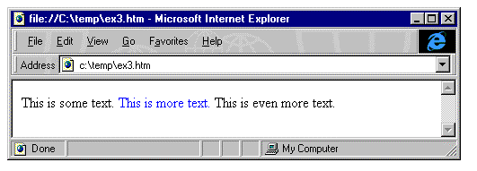
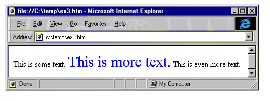

|
| ||
|
| ||
Michael Wallent
Lead Program Manager
Microsoft Corporation
July 15, 1997
Updated: September 30, 1997
The following article was originally published in Site Builder Magazine (now known as MSDN Online Voices).
With the advent of Cascading Style Sheets (CSS) in Internet Explorer 3.0, Web authors received unprecedented control over the look of all the HTML elements on a page. Internet Explorer 4.0 brings this technology a step further, providing the ability to dynamically change any attribute, at any time, on any element. And yes, all other HTML attributes (such as src on an img) can be changed dynamically as well.
You might be asking: "OK, what new HTML tags do I need to use this Dynamic Styles stuff?"
Answer: "None."
In this example, as the mouse moves over the H1 heading, the color changes to red:
<H1 onmouseover="this.style.color = 'red';">Make me red</H1>In this example, as the mouse moves over the image, its source changes from before.gif to after.gif:
<IMG src="before.gif" onmouseover="this.src = 'after.gif';">Regular HTML attributes are accessed as properties on each element. CSS attributes can be set from the style sub-object.
When the color of an element is changed dynamically, it still fits into the same space as it did before the color changed. This is a relatively basic operation. However, there are other styles, such as fontSize or fontFamily, which, when changed, actually change the size of the element. Internet Explorer 4.0 handles each such change automatically for you. It will automatically re-flow a document to ensure that all the elements fit perfectly.
For example:
<html> <body> This is some text. <span style="color: blue" onclick="Initially, the document looks like this:
this.style.fontSize = '30'">This is more text.</span> This is even more text. </body> </html>

After clicking on "This is more text," the document then looks like this:

Because Internet Explorer 4.0 automatically re-flows the document when attribute values change, some very powerful functionality can be built with very small amounts of code. For example, using the display attribute, you can make elements on the page disappear, and treat them as if they were never on the page.
For example:
<html> <body> <div style="cursor: hand" onclick="toggle(document.all.HideShow);">This HTML displays three lines. When the user clicks on the line "Click Here," the SPAN with the text "This will go away" will be set to display: none. When clicked again, it will be reset.
Click Here</div> <span style="color: blue" id=HideShow>This will go away</span><br> This is some text <script> function toggle(e) { if (e.style.display == "none") { e.style.display = ""; } else { e.style.display = "none"; } } </script> </body> </html>
Notice that simply by setting display: none on an element, it disappears, and the browser automatically reclaims the space it occupied. This mechanism can be used to have pages that display new types of information on demand, without having to revisit the server. The two supported values for the display property are none and "" (or null).
This sample also makes use of the cursor CSS attribute. The cursor attribute allows a Web author to specify what cursor will be shown when it is over an element. In this case, we chose the hand cursor to indicate that the text titled "Click Here" would perform an action when clicked. The use of the cursor attribute obviates the need to wrap elements in an anchor in order to have the cursor change to a hand, an effect you would use to indicate that something will happen if the user clicks.
The set of valid values for the cursor property are: crosshair, default, hand, move, e-resize, ne-resize, nw-resize, n-resize, se-resize, sw-resize, s-resize, w-resize, text, wait, and help.
While the display property makes an element invisible, and allows the browser to reclaim the space that it occupied, the visibility property can be used to simply make an element disappear, but still reserve its space in the document.
The following example is identical to the above example, except it uses the visibility property instead of the display property.
<html> <body> <div style="cursor: hand" onclick="toggle(document.all.HideShow);">Watch in this example how the line will become invisible, but its space will not be reclaimed.
Click Here</div> <span style="color: blue" id=HideShow>This will go away</span><br> This is some text <script> function toggle(e) { if (e.style.visibility == "hidden") { e.style.visibility = "visible"; } else { e.style.visibility = "hidden"; } } </script> </body> </html>
You might have noticed that many CSS properties have a dash in their name (such as background-color). The dash, as you may know, isn't a valid character for identifiers in most scripting languages. To get around this little problem, continue to use the dashed name when specifying the CSS attribute in HTML or in a style sheet, but when accessing it in a script, remove the dash, and capitalize the next letter. For example:
background-color becomes backgroundColor
border-left becomes borderLeft
margin-bottom becomes marginBottom
Also notice that while any CSS property can be set at any time, using the current settings on the STYLE object will only indicate its inline styles, and not any inherited styles or styles obtained by setting the class of an element.
For example:
<html>
<head>
<style>
.class1 {font-family: arial}
</style>
</head>
<body>
<div id=SetByClass class=Class1>Set By Class</div>
<div style="font-family: arial">
<div id=Inherited>Inherited</div>
</div>
<div id=DirectlySet style="font-family: arial">Directly Set</div>
<div id=SetWithScript>Set with Script</div>
<script>
alert(SetByClass.style.fontFamily);
alert(Inherited.style.fontFamily);
alert(DirectlySet.style.fontFamily);
SetWithScript.style.fontFamily = "arial";
alert(SetWithScript.style.fontFamily);
</script>
</body>
</html>
When this document loads, four alert dialogs will pop up successively. The first two will be blank, while the next two will contain the text "arial." While all of the text on the document is Arial, referencing style.fontFamily will show "arial" only on the DIV that had the font-family property set with an inline style or was previously set with script.
With Internet Explorer 4.0, page authors have total control over all attributes of all page elements at any time. Changes made to attributes that cause the page to change shape are handled automatically, with no additional script intervention by the author.
Michael Wallent is Microsoft's lead program manager for Dynamic HTML.
For technical how-to questions, check in with the Web Men Talking, the MSDN Online 's answer pair.
Did you find this material useful? Gripes? Compliments? Suggestions for other articles? Write us!
© 1999 Microsoft Corporation. All rights reserved. Terms of use.